"I am Paula Louisse G. Rejas, a 19-year-old second-year BSIT student from Prk.1 Mudiang, Davao City, currently pursuing my studies at Jose Maria College Foundation Inc. As a dedicated learner in the field of Information Technology, I am cultivating a comprehensive understanding of various programming languages, software development methodologies, and networking. My ambition is to work as a software developer, creating and maintaining innovative software solutions that not only meet technical standards but also contribute significantly to societal betterment. I am actively involved in projects that enhance my problem-solving skills and collaborative mindset, aligning with the ever-evolving demands of the tech industry. This journey is deeply rooted in my passion for technology and continuous learning, as I strive to make a positive and meaningful impact in the dynamic field of software development."
Hobbies

Listening to Music
Enjoying a variety of music genres, from soothing lo-fi beats to energetic tunes. Music is my escape and inspiration.
Watching Movies
Exploring different film genres and enjoying the art of storytelling through the lens of a camera. Movies are my passion.
TikTok
Creating and exploring short-form videos on TikTok, expressing creativity and staying updated with trending content.
Playing Online Games
Immersing myself in the world of online gaming, from strategic battles to cooperative adventures. Gaming is my digital playground.
Mobile Photography
Exploring the art of mobile photography, capturing moments with creativity and a unique perspective.
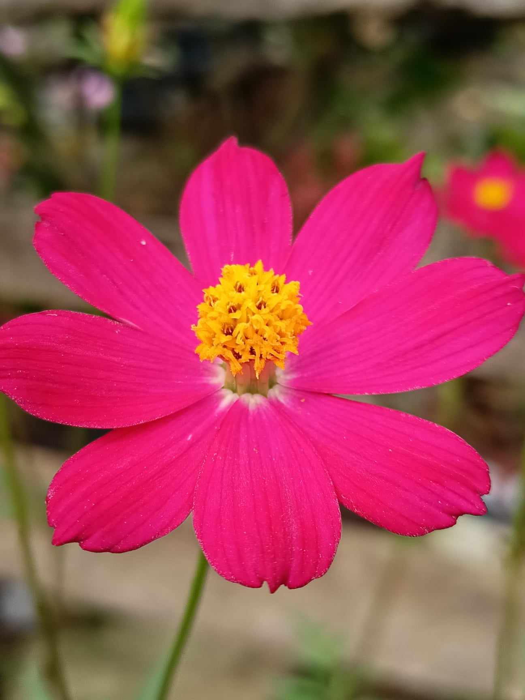 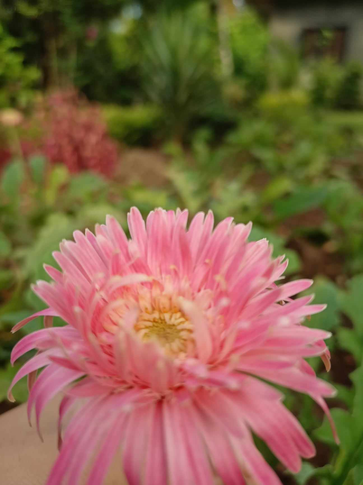 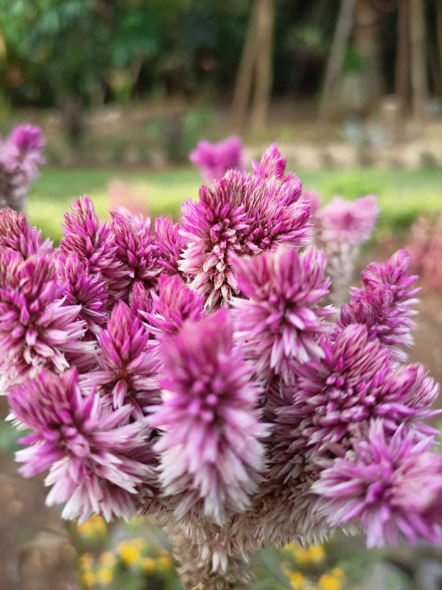 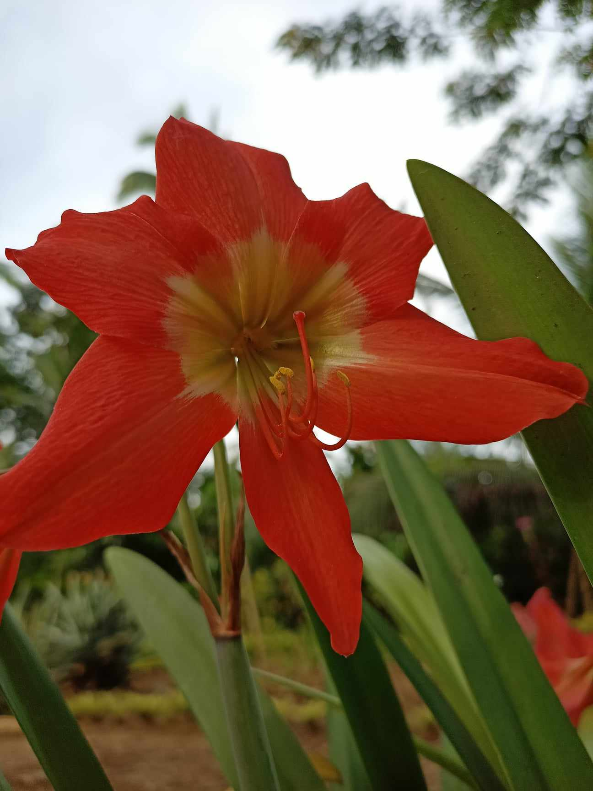 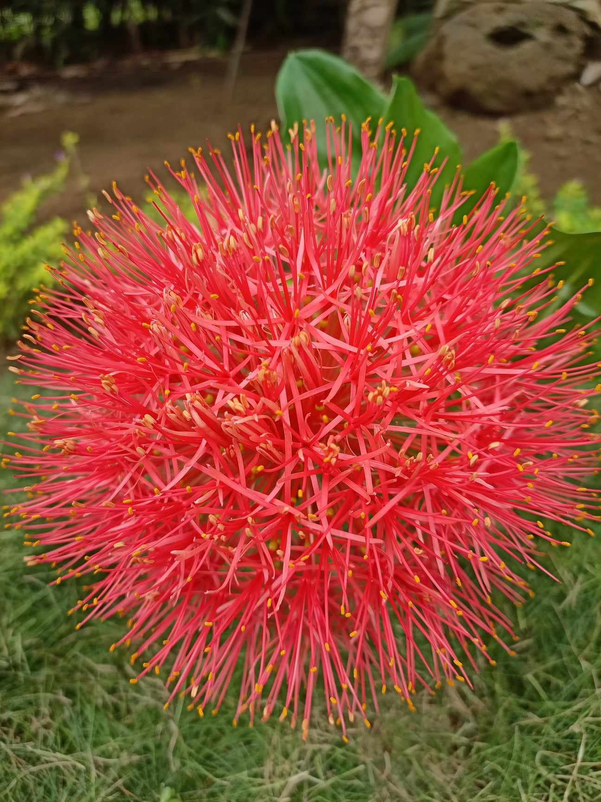 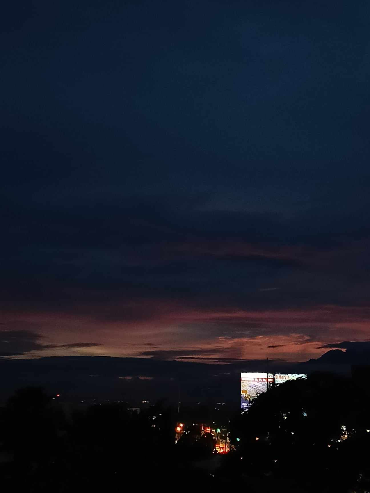 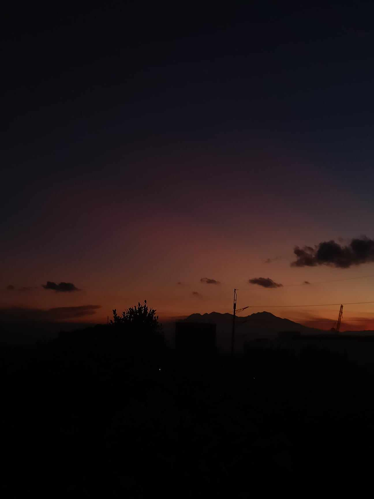 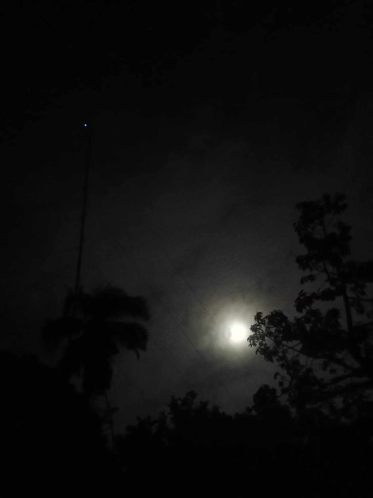Interests
-
Web DesignI have a strong passion for web design because it allows me to unleash my creativity and transform ideas into visually appealing and functional websites. I enjoy the process of combining aesthetics with user experience, striving to create designs that not only look great but also provide seamless navigation and engagement.

Soft Skills
- 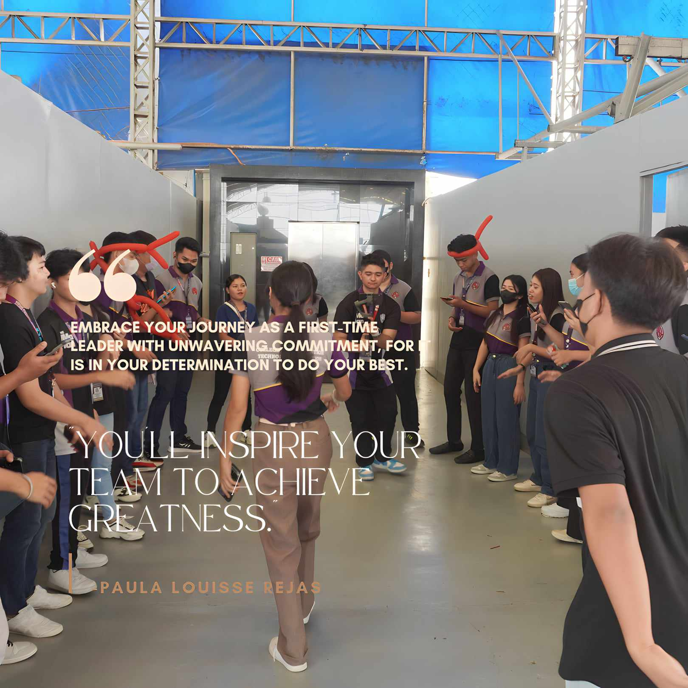
-
LeadershipExemplifying strong leadership qualities, I strive to guide and inspire my team towards common goals. Through effective decision-making and fostering collaboration, I aim to bring out the best in myself and those around me.
- 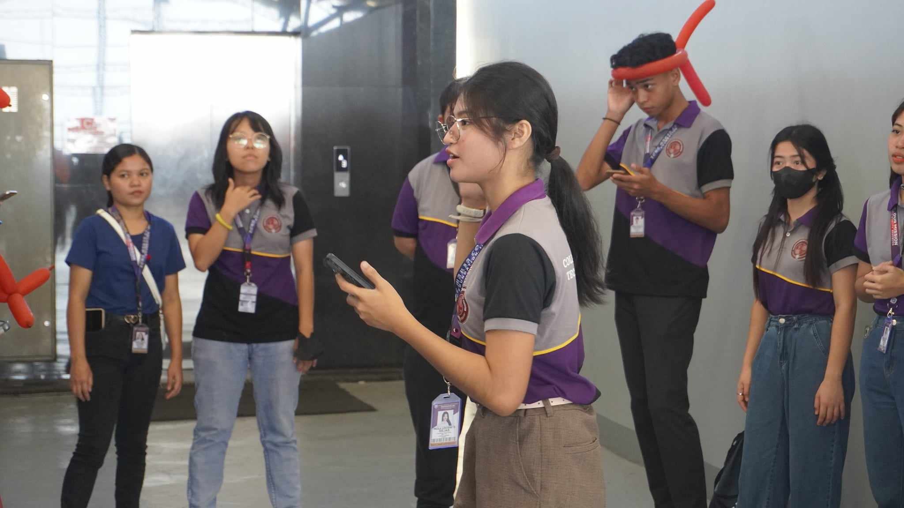
-
CommunicationEffective communication is key in any endeavor. I prioritize clear and concise communication to ensure mutual understanding and collaboration. Whether conveying ideas or actively listening, I believe communication is the foundation of successful interactions.
Education
- 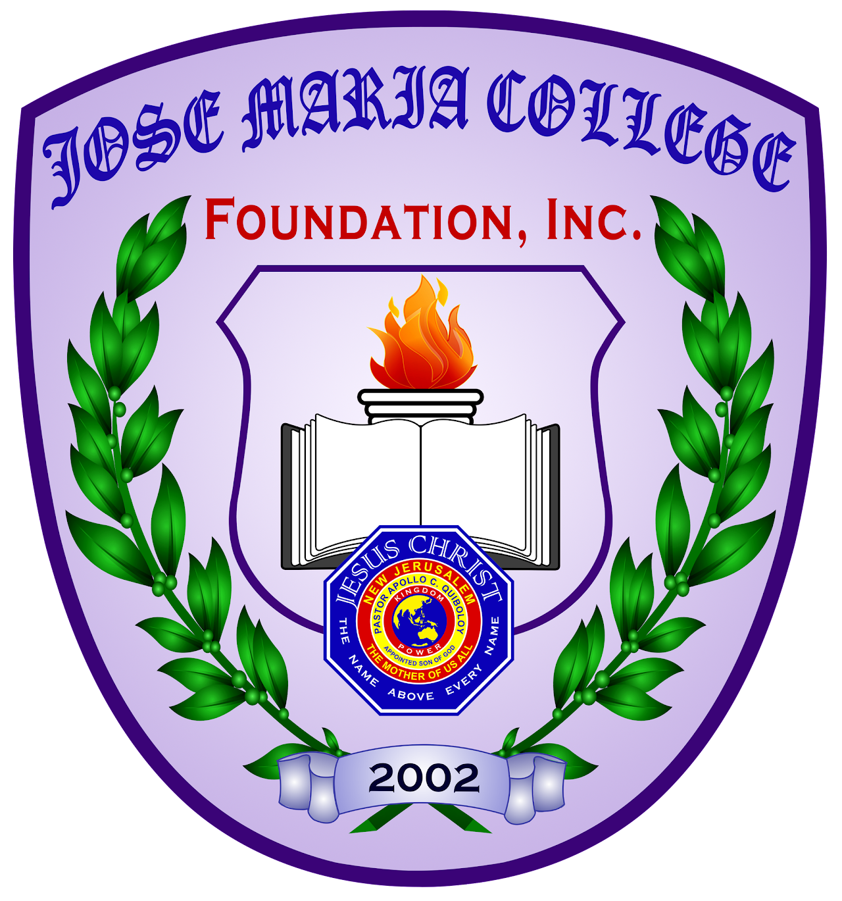
Mudiang Elementary School
F. Bustamante National High School
Jose Maria College Foundation Inc.